How to Install Teranode with Kubernetes Helm
Last modified: 28-Jul-2025
Index
- Introduction
- Prerequisites
- Deployment with Minikube
- Verifying the Deployment
- Production Considerations
- Other Resources
Introduction
This guide provides instructions for deploying Teranode in a Kubernetes environment. While this guide shows the steps to deploy on a single server cluster using Minikube, these configurations can be adapted for production use with appropriate modifications.

Prerequisites
Before you begin, ensure you have the following tools installed and configured:
Additionally, ensure you have a storage provider capable of providing ReadWriteMany (RWX) storage. As an example, this guide includes setting up an NFS server via Docker for this purpose.

Deployment with Minikube
Minikube creates a local Kubernetes cluster on your machine. For running Teranode, we recommend the following process:

Start Minikube
Start minikube with recommended resources and verify its status:
# Start minikube with recommended resources
minikube start --cpus=4 --memory=8192 --disk-size=20gb
# Verify minikube status
minikube status
Deploy Dependencies
Teranode requires several backing services. While these services should be deployed separately in production, for local development we'll deploy them within the same cluster.
Create Namespace
Create a namespace for the deployment:
kubectl create namespace teranode-operator
Deploy Backing Services
Deploy all dependencies in the teranode namespace:
kubectl apply -f deploy/kubernetes/aerospike/ -n teranode-operator
kubectl apply -f deploy/kubernetes/postgres/ -n teranode-operator
kubectl apply -f deploy/kubernetes/kafka/ -n teranode-operator
To know more, please refer to the Third Party Reference Documentation
Create Persistent Volume Provider
For this example, we will create a local folder and expose it to Minikube via a docker based NFS server.
Standard x86/x64 Systems
docker volume create nfs-volume
docker run -d \
--name nfs-server \
-e NFS_EXPORT_0='/minikube-storage *(rw,no_subtree_check,fsid=0,no_root_squash)' \
-v nfs-volume:/minikube-storage \
--cap-add SYS_ADMIN \
-p 2049:2049 \
erichough/nfs-server
# connect the nfs-server to the minikube network
docker network connect minikube nfs-server
# create the PersistentVolume
kubectl apply -f deploy/kubernetes/nfs/
ARM-based Systems
For arm based systems, you can use this variant:
docker volume create nfs-volume
docker run -d --name nfs-server --privileged \
-v nfs-volume:/minikube-storage \
alpine:latest \
sh -c "apk add --no-cache nfs-utils && \
mkdir -p /minikube-storage && \
chmod 777 /minikube-storage && \
echo '/minikube-storage *(rw,sync,no_subtree_check,no_root_squash,insecure,fsid=0)' > /etc/exports && \
exportfs -r && \
rpcbind && \
rpc.statd && \
rpc.nfsd 8 && \
rpc.mountd && \
tail -f /dev/null"
# connect the nfs-server to the minikube network
docker network connect minikube nfs-server
# create the PersistentVolume
kubectl apply -f deploy/kubernetes/nfs/
Load Teranode Images
Pull and load the required Teranode images into Minikube:
Identify Available Versions
You can find the latest available version published on GitHub Container Registry:
- https://github.com/bsv-blockchain/teranode/pkgs/container/teranode
- https://github.com/bsv-blockchain/teranode-operator/pkgs/container/teranode-operator
Set Image Versions
# Set image versions (please derive the right TERANODE_VERSION from the results of the previous command)
export OPERATOR_VERSION=v0.5.5
export TERANODE_VERSION=v0.11.13
export ECR_REGISTRY=ghcr.io/bsv-blockchain
Load Images into Minikube
# Load Teranode Operator
docker pull $ECR_REGISTRY/teranode-operator:$OPERATOR_VERSION
minikube image load $ECR_REGISTRY/teranode-operator:$OPERATOR_VERSION
# Load Teranode Public
docker pull $ECR_REGISTRY/teranode:$TERANODE_VERSION
minikube image load $ECR_REGISTRY/teranode:$TERANODE_VERSION
Deploy Teranode
The Teranode Operator manages the lifecycle of Teranode instances:
Install Teranode Operator
# Install operator
helm upgrade --install teranode-operator oci://ghcr.io/bsv-blockchain/teranode-operator \
-n teranode-operator \
-f deploy/kubernetes/teranode/teranode-operator.yaml
Apply Teranode Configuration
Apply the Teranode configuration and custom resources:
kubectl apply -f deploy/kubernetes/teranode/teranode-configmap.yaml -n teranode-operator
kubectl apply -f deploy/kubernetes/teranode/teranode-cr.yaml -n teranode-operator
Start Syncing Process
A fresh Teranode starts up in IDLE state by default. To start syncing from the legacy network, you can run:
kubectl exec -it $(kubectl get pods -n teranode-operator -l app=blockchain -o jsonpath='{.items[0].metadata.name}') -n teranode-operator -- teranode-cli setfsmstate -fsmstate legacysyncing
To know more about the syncing process, please refer to the Teranode Sync Guide
Verifying the Deployment

To verify your deployment:
# Check all pods are running
kubectl get pods -n teranode-operator | grep -E 'aerospike|postgres|kafka|teranode-operator'
# Check Teranode services are ready
kubectl wait --for=condition=ready pod -l app=blockchain -n teranode-operator --timeout=300s
# View Teranode logs
kubectl logs -n teranode-operator -l app=blockchain -f
Production Considerations
For production deployments, consider:
- Deploying dependencies (Aerospike, PostgreSQL, Kafka) in separate clusters or using managed services
- Implementing proper security measures (network policies, RBAC, etc.)
- Setting up monitoring and alerting
- Configuring appropriate resource requests and limits
- Setting up proper backup and disaster recovery procedures
An example CR for a mainnet deployment is available in kubernetes/teranode/teranode-cr-mainnet.yaml.